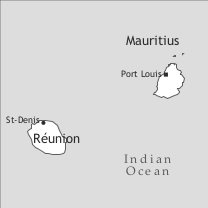

by Annegret Bollée

Reunion Creole is spoken by the majority of the 800,000 inhabitants of Reunion Island, a French Overseas Department, and by a considerable number of diaspora speakers in metropolitan France. It is difficult to estimate the number of speakers because French statistics do not provide information on language use.
Reunion Creole is without doubt a true creole in the socio-historical sense of the term, but differs from other French-based creoles in some respects: The language forms a complex continuum from acrolect to basilect, with many intermediate varieties of remarkable inconsistency. Its grammar shows features of French which have been maintained in the process of creolization or were reintroduced later on. The linguistic peculiarity of Reunion Creole is, of course, a result of its history, but geographical factors also play a role, the mountainous nature of the island having caused very poor internal communications until the last century. Compared to the plantation societies in other French colonies, the situation in Bourbon (the island’s name from 1649 until 1848) has been described by historians as exceptional, the most important features being widespread interethnic marriage, maintenance of small-scale agriculture during the plantation period, and the emergence of a white proletariat.
France took possession of the uninhabited island in 1640, but permanent settlement and colonization did not start before 1665. Many of the first French settlers had Malagasy spouses and servants; others married young women (“métisses indo-portugaises”) brought from India for this purpose. The first census, held in 1686, shows that interethnic marriages were frequent (Chaudenson 1974: 455).
Slavery was at first formally prohibited, but was gradually introduced de facto and was tolerated after the promulgation of the Code noir in the Caribbean in 1685; with certain modifications this code took effect in the Mascarenes in 1723. The slave trade, officially illegal until this date, began in 1697 with the arrival of 21 slaves from Africa and Madagascar. In the 17th century, the colony did not prosper and its population grew very slowly; it was not until after 1717 that the slaves began to outnumber the whites (see Table 1 for the population development).3 The demographic development in the decade 1725–1735 reflects the transition from a homestead society (“société d’habitation”) to a plantation society (“société de plantation”), as described by Chaudenson (2001: 96–129); this development followed the introduction of coffee planting around 1725. However, even during the plantation period a large number of small farms existed, producing mainly foodstuffs. These foodstuffs also supplied Mauritius since, in the 18th century, Bourbon functioned as the “granary” of the Mascarenes. In 1795, as many as 1,850, i.e. two thirds of the owners, had 1 to 10 slaves, and many had no slaves at all. Two factors led to the gradual development of a white proletariat called “Petits Blancs” (poor whites) in the course of the 18th century: The growing number of new colonists after 1725 caused a shortage of land, and the French patterns of inheritance required the division of land among all the children, with dramatic results in large families. The landless whites tried to make a living in the island’s highlands where some remote places, even today, are only accessible on foot.
|
Table 1. Population numbers for Bourbon (Reunion) (1704–1848) |
|||
|
whites |
free “coloured” people |
slaves |
|
|
1704 |
423 |
311 |
|
|
1714 |
633 |
538 |
|
|
1725 |
1,402 |
1,776 |
|
|
1735 |
1,716 |
100 |
6,573 |
|
1772 |
5,477 |
225 |
24.687 |
|
1788 |
8,182 |
1,029 |
37,984 |
|
1820 |
15,800 |
4,700 |
51,200 |
|
1830 |
27,200 |
3,1004 |
71,700 |
|
1848 |
45,300 |
4,200 |
60,800 |
Madagascar remained the main source of slaves until the 1760s when the trade from East Africa became more important. The sugar industry did not develop until the first decade of the 19th century, paradoxically at the same time when the slave trade met with growing political resistence. It was completely prohibited in 1817 but could not be stopped: about 33,000 Africans (Cafres) were clandestinely imported until 1830 and 10,000 to 20,000 after 1830. The shortage of manual labour led to the immigration of free servants from 1825 onwards; indentured workers (engagés), mostly from Southern India (Malbars), arrived in larger numbers after the abolition of slavery in 1848. “In 1887, of the 210,000 residents of the island, 80,000 were recent immigrants!” (Chaudenson 2001: 30). Among these recent immigrants were Chinese, who were recruited as field hands but quickly took over the grocery business so that today the word sinwa also means ‘grocery’. The last immigrants to arrive towards the end of the 19th century were Muslim Indians from Gujarat, misnamed Zarab by the Creoles. Towards the end of the 20th century, whites made up about a quarter of the population and the Malbar a little less than a quarter, while Chinese numbered 15,000 and the Zarab 6,000; “the remaining Réunionnais, about half of the total population, [were] of mixed and diverse ethnic origin” (Chaudenson 2001: 30).
The study of two religious texts by Philippe Caulier, probably written in the 1760s (Bollée 2007), supports Chaudenson’s hypothesis that a continuum of approximative varieties of French developed in the homestead society when the slaves were in close contact with the colonists and their families and that creolization in the strict sense began in the plantation society when large numbers of newly arrived slaves, without ready access to the model of Colonial French as spoken by the colonists, attempted to acquire these approximative varieties from the Creole slaves in charge of their acculturation. A comparison of the Caulier texts, the Fables of Louis Héry, published in 1828/1856 (Chaudenson 1981), and the recordings made for the Atlas linguistique et ethnographique de la Réunion (ALR) in the 1970s shows that the formation of Reunion Creole was a gradual process and that some phenomena of linguistic change have led to fluctuating results. Data for the present article are mainly taken from the recordings made for the ALR by Christian Barat, namely transcriptions in Cellier (1982), examples in Cellier (1985), examples and short texts printed in the ALR, and stories told by the informants who were interviewed for the ALR, published by Barat et al. in 1977.
The linguistic situation of Reunion has been described in terms of the Fergusonian diglossia insofar as bilingual speakers tend to use creole in private contexts and informal situations, and French in public contexts and formal situations (but not exclusively); part of the population, however, “consists of passive bilinguals (who understand French, more or less, but speak it hardly, if at all)” (Chaudenson 2001: 30). Since the beginning of the 21st century the “classic” diglossia with Creole as the “low variety” seems to be changing. “The patient march of the creole languages“ (“La patiente marche des langues créoles”) – to quote the title of a colloquium organized in October 2008 by the Conseil Régional de la Réunion and the Office de la langue créole (founded in 2006) – has made some progress towards a “bilinguisme français-créole harmonieux”. On the occasion of this colloquium, Axel Gauvin, novelist and director of the Office, announced the results of a poll showing that “la représentation du créole est positive”, creole language and culture being regarded as an essential ingredient of Réunionnais identity5.
The creoles spoken in the French Overseas Departments Martinique, Guadeloupe, French Guiana, and Reunion were totally ignored by French legislation until recently, even though they are the most vital regional languages of France with the largest numbers of speakers; in 2000 they were finally given the official status of regional languages. The much debated creation of a creole certificate of aptitude for teaching in secondary education (CAPES) in 2002 has apparently had the positive effect that Creole now finds its place in the education system and that competent teachers take an active part in the “patient march of Creole” which will no doubt still have to overcome some obstacles, one of them being the lack of an officialized orthography – in the CAPES exams, students can choose from among four different spelling systems.
The phonological system of Reunion Creole forms a continuum from basilect to acrolect with intermediate fluctuating varieties, as illustrated by the phonetic maps of the ALR (I: p. 236–238). In Tables 2 and 3, acrolectal phonemes are noted in parentheses.
The basilectal vowel system has 11 oral and three nasal vowels, while the acrolectal system has 14 oral and four nasal vowels because the (French) opposition between rounded and unrounded front/central vowels is maintained. Intermediate realizations are frequently noted on the maps of the ALR.
|
Table 2. Vowels |
|||
|
front |
central |
back |
|
|
close |
i, i: <ir/iy> |
(y <u>) |
u <ou>, u: <our> |
|
close-mid |
e |
(ø <eu>) |
o |
|
open-mid |
ɛ, ɛː <er>, ɛ̃ <en> |
ə <ë>, (œ <eu>, œ̃ <eun>) |
ɔ, ɔː <or>, ɔ̃<on> |
|
open |
a, ɑː <ar>, ã <an> |
||
Close and open mid vowels are allophones governed by syllable structure: Close vowels occur in open syllables, open vowels in closed syllables; a graphic distinction is, therefore, unnecessary. Vowel length, however, is distinctive, cf. minimal pairs li ‘bed’ vs. lir ‘to read’, ka ‘case’ vs. kar ‘quarter’, mo ‘word’ vs. mor ‘dead’. Nasalization of vowels before nasal consonants is subject to considerable variation and therefore noted inconsistently in the textual sources, e.g. fam, fanm ‘woman’, maman, manman ‘mother’. The phoneme /ə/ has three further allophones: zero, [o], and [ø], e.g. sëmenn, smenn, somenn, seumenn ‘week’, [ø] being restricted to acrolectal varieties and [o] being characteristic of the basilectal variety.
The basilectal sound system has 19 consonants, the acrolectal system 21 because the (French) oppositions of /s/:/ʃ/ and /z/:/ʒ/ are maintained. Intermediate allophones are frequent.
|
Table 3. Consonants |
|||||||||
|
bilabial |
labio-dental |
dental/alveolar |
post-alveolar |
palatal |
velar |
labio-velar |
uvular |
||
|
plosive |
voiceless |
p |
t |
k |
|||||
|
voiced |
b |
d |
g |
||||||
|
nasal |
m |
n |
ɲ <ny> |
ŋ <ng> |
|||||
|
fricative |
voiceless |
f |
s |
(ʃ <ch>) |
|||||
|
voiced |
v |
z |
(ʒ <j>) |
ʁ |
|||||
|
lateral |
l |
||||||||
|
glide |
j <y>, ɥ <u> |
w |
|||||||
Stress is always on the last syllable of isolated words as well as phrases and sentences. Palatalization of /t/ and /d/ before /i/ occurs, but seems to be very rare, e.g. ptsi, tsi ‘small’.
Various spelling systems have been proposed for Reunion Creole but no agreement has so far been reached concerning the codification of the written language. For the present contribution the orthography of Haitian Creole was adapted to the sound system of Reunion Creole (see Table 2 and Table 3).
The grammar of Reunion Creole is characterized by pervasive variation and apparently many variants are typical either of the basilect or of the acrolect (e.g. en zalimet/ eunn alumet ‘a match’, mon fanm / ma fanm ‘my wife’). For a thorough description it would, therefore, be necessary to distinguish systematically between basilectal and acrolectal variants. However, this is hardly possible because neither basilect nor acrolect are fully stabilized and because of the aforementioned continuum of fluctuating intermediate varieties. In the following sections I have ignored data which are exclusively attested at acrolectal points of the ALR. It should be kept in mind that a presentation not paying sufficient attention to the acrolect is, of course, incomplete.
Nouns and determinants are mostly invariable, but residual marks of number and gender are observed, especially in the case of determiners.
Nouns with agglutinated consonants are frequent, e.g. larzan ‘money’, zwazo ‘bird’; some of them have different variants, not necessarily depending on the syntactic context in which they occur, e.g. en zanfan / enn anfan ‘a child’, tire lanfan ‘to abort’; en lor(e)ye / en zor(e)ye ‘a pillow’. Syllabic agglutination of the French articles is very rare, e.g. en gro laplui, but also en gros plui ‘a heavy rain’.
Morphological distinctions are found to express natural gender for human nouns, e.g. kouzen / kouzin ‘cousin’, kaf / kafrin ‘person of African origin’, malbar / malbarez, malbard ‘Indian’; for animals, mal ‘male’ or femel ‘female’ can be used: en mal denn ‘a turkey (cock)’, enn femel lapen ‘a doe (of rabbit)’.
Number marking: Bare nouns can have plural meaning, but plural is mostly marked with le for inanimates and bann for animates, e.g. le ros, le gale ‘the stones’, bann zanfan, bann marmay ‘the children’. The distinction is, however, not clear-cut, le can also be used with animates: le zanfan ‘the children’.
There is an indefinite article en preposed to the noun (enn before vowels), with a feminine form enn: enn zoli fiy ‘a pretty girl’ apparently not limited to the acrolect; the plural is de:
It is debatable whether Reunion Creole has a definite article. Forms of the French article have survived: lë, l, lo < le, la < la, le < les, described by Cellier as “indices nominaux”, but he then goes on to say that these forms have a mixed function (1985: 54). They can indeed be shown to have the usual functions described for definite articles (situational, discourse deictic, and anaphoric use), e.g.:
Masculine (lë, l, lo) and feminine (la) forms are used in accordance with the etymological gender, and le is the most frequent plural marker. The variant lo – rarely attested in the ALR – seems to be considered basilectal and is preferred by certain authors of contemporary literature.
The demonstrative is a discontinuous morpheme: sg së … la, pl se … la, but postposed la alone also occurs and can be used with the definite article:
Adnominal possessives, preceding the noun, are mon ‘my’, out ‘your (sg)’, son ‘his, her, its’, nout ‘our’, zot ‘your (pl)’, and zot ‘their’, the form zot being homonymous with the personal pronoun. There are also acrolectal feminine and plural forms: ma gran-mer ‘my grandmother’, sa ser ‘his/her sister’, se bra ‘his/her arms’.
In possessor noun phrases the possessee precedes the possessor; the possessor is unmarked in the basilect and marked with d(ë) or du in acrolectal varieties.
The order of adjectives and nouns follows French patterns. A small number of frequent adjectives with wide semantic range precede the noun, e.g. en gran ferblan ‘a big tin’, en gro bef ‘a big bull/cow’, en zoli fiy ‘a pretty girl’. A large number of less frequent adjectives with specific meanings such as shape, colour, ethnicity, geographic origin, religion, follow the noun, e.g. seve drwat / frize / rouz ‘straight / curly / red hair’, la lang kreol ‘the creole language’, bef malgas ‘zebu (Malagasy ox)’, en pret malbar ‘an Indian priest’. Gender agreement for adjectives referring to animates is mainly acrolectal, e.g. en vye boug ‘an old man’, enn vyey nenèn ‘an old maid’.
In comparative constructions the adjectives are preceded by osi for equality, pli ‘more’ and mwen ‘less’ for inequality, and the standard is marked by k(ë):
In superlative constructions the adjective is preceded by lë pli or lë mwen, e.g. lë pli move boug ‘the most wicked man’.
Personal pronouns show two distinctions: reduced vs. full variants (for subject pronouns), and subject pronouns vs. oblique pronouns with initial a-, which are unique to Reunion Creole among the French-based creoles.
|
Table 4. Personal pronouns |
||||
|
reduced subject pronouns |
full subject pronouns |
oblique pronouns |
adnominal possessive pronouns |
|
|
1sg |
m |
mwen, mwa |
amwen |
mon |
|
2sg.pol |
v |
ou, vou |
aou, avou |
out |
|
2sg.fam |
t |
twe, to |
atwe |
ton |
|
3sg |
l |
li, el |
ali, ael |
son |
|
1pl |
n |
nou |
anou |
nout |
|
2pl |
-- |
zot |
azot |
zot |
|
3pl |
-- |
zot, bannla |
azot |
zot |
In the 1sg there seems to be a distinction between basilectal mwen and acrolectal mwa. The politeness distinction in the 2sg is in decline and stylistically marked, to, (a)twe expressing familiarity or contempt. The gender distinction for the 3sg is acrolectal: masculine (a)li vs. feminine (a)el.
The reduced subject pronouns are free variants of the full subject pronouns, used with the finite marker i (v-i manz ‘you eat’) or with a, the reduced form of the future marker va (m-a manze ‘I will eat); v-a ‘you will’ seems to be rare, l-a ‘s/he will’ and n-a ‘we will’ are not attested in the corpus used for this survey, but n-a is fairly common in the Southwestern basilectal variety.
Oblique forms occur as direct and indirect objects, after imperatives, e.g. devin aou! ‘guess!’, ekout azot! ‘listen!’, and as reflexive pronouns, e.g. li prepar ali ‘he prepares himself’. The oblique form can also be used for emphasis (e.g. contrast):
The person syncretism of 2pl and 3pl, caused by the homophony of vous autres > zot and eux autres > zot, may be the reason for the emergence of bannla, banna ‘they’.
Pronominal demonstratives are sa, sak (la), sad/sat (la), e.g.: sa i fe pa mal ‘that does not hurt’, sad la m i kone pa mwa ‘this/that one I don’t know’. There are two constructions for pronominal possessives: sa d mwen / la myèn, le myèn ‘mine’, sa d ou / la tyèn / la vot ‘yours (sg)’, sa d li / la syèn ‘his, hers’, sa d nou / la not ‘ours’, sa d zot ‘yours (pl); theirs’.
About 90% of all verbs in Reunion Creole have two forms, a short form and a long form ending in -e. The short form is used for the present: mi manz ‘I eat’ and the past: mwen te i manz ‘I ate’. In other cases the use of the two forms is “governed by a context-sensitive rule that deletes the -e when the following element is a constituent governed by the verb” (Corne 1999: 80), e.g. mwen la manze ‘I have eaten’ / mwen la manz mon kari. ‘I have eaten my curry.’
Some verbs have only one form, e.g. bwar ‘drink’, balye ‘sweep’, and some have long forms roughly corresponding to French infinitives or past participles, e.g. mi par ‘I leave’, mwen la parti ‘I have left’, mi sar partir ‘I will leave’; mi vann ‘I sell’, mwen la vann/vandi ‘I sold’, the variant vandi being acrolectal. Some verbs show suppletion according to tense and aspect: ale ‘to go’ (anou ale ‘let’s go’, li sava la boutik ‘s/he goes to the shop’) and the verbs et ‘to be’ (et (infinitive), le (present), (le)te (past), sra (future), sre (conditional)) and avwar ‘to have’ ((na)na / la (present), nave / lave (past), nora / lora (future), nore / lore (conditional)). Avwar expresses transitive possession and is also used as an auxiliary and existential verb. The verb ‘to be necessary’ has the following forms: fo (present), fale (past), fodra (future), fodre (conditional).
Tense and aspect are expressed by means of preposed markers, e.g. fin (perfect): mwen fin dir aou ‘I told you’, by constructions with copula, e.g. apre/antren d (progressive): li l(e) apre / antren d manze ‘s/he is eating’, or by verbal periphrases, e.g. sort, vyen d (immediate past):
The present tense (covering ongoing or habitual actions and occurring in narratives) is expressed by the short form of the verb, preceded by i, with full or reduced forms of the personal pronoun: m-i sant / mwen i sant ‘I sing’. However, the marker i also occurs in non-present contexts: it is combined with te to form the past marker te i; it occurs in the future, e.g. mi sa(va) manze ‘I will eat’, mi manzra pa ‘I will not eat’, and it occurs with the morphological past in acrolectal varieties, e.g. mi sante ‘I sang’. The particle i is not a tense marker; it has been described as “indice verbal” by Cellier (1985: 84) or marker of “finiteness in all persons and numbers” (Michaelis 2000: 169).
The future is marked with va (-a with reduced pronouns) or sava, sar, sa, e.g. ma/mi sa(va) rod zerb ‘I will fetch grass’. The negative future can be expressed morphologically (e.g. ou vera pa, ou konetra pa ‘you will not see, you will not know’) by forms inherited from French, but the pattern seems to have remained productive, e.g. sa i femal [< French fait mal], sa i femalra pa ‘that hurts, that will not hurt’. Immediate future can be expressed with pou preceded optionally by the copula (this construction seems to be infrequent):
There is a marker te i for the past, e.g. lontan bann fanm te i met pantouf ‘in the past the women wore (or: used to wear) slippers’, with less frequent variants te and te ki; the meaning can be compared to that of the French imparfait. Te and te i also occur in conditional clauses to express counterfactuality:
The combination te fin(i) is used for the past-before-past: zot te fin manze ‘they had eaten’. Immediate past is marked with sort or vyen d (ALR 70N; see example 6).
There are two markers for the perfect, fin(i) and la, frequently attested in combination: li la parti ‘he has left’, mwen fin / la fin(i) oubliye ‘I have forgotten’. The meaning resembles that of French passé composé, and there seems to be no semantic difference between la and fin or the combined variants. The marker la has special forms for perfect future (lora / nora) and conditional (lore / nore):
Progressive aspect is marked by apre or antren d, preceded by the forms of the copula referring to present, past, or future: li le / (le)te / sra apre dormir ‘he is/was/will be sleeping’. There does not seem to be a semantic difference between the two markers.
Negative morphemes pa and pwen (less frequent) follow the verb and the copula: li bouz pa ‘s/he does not move’, lontan navé pwen tro loto ‘formerly there were not many cars’, li le pa dakor ‘s/he does not agree’. They precede the main verb if it is marked by la or sa(va): zot la pa fini ‘they have not finished’, li va pa donn aou ‘s/he won’t give (it) to you’. Indefinite negative pronouns co-occur with the negative morpheme: mi kone pa aryen ‘I know nothing’.
Modality is expressed by modal verbs, constructions with copula or with ‘have’, or the impersonal construction i fo ‘it is necessary’.
(i) Possibility:
(ii) Necessity:
(iii) Permission:
(iv) Obligation:
(v) Epistemic modality (uncertainty/probability) can be expressed by adverbs (ptet ‘perhaps') or by dwa ‘must’; kapab ‘able’ and bezwen ‘need’ are not attested with an epistemic reading:
The word order in simple sentences is Subject–Verb–Object. With ditransitive verbs, pronominal objects appear in the oblique form and nominal objects are unmarked:
Reunion Creole has no prototypical passive constructions, but there are several possibilities to cover the functions of passives in French or German.
(i) Sentences without subject, referring to a non-specific human agent, are very frequent:
(ii) The patient can be placed in subject position, followed either by a verb preceded by TMA markers (16a), or by the copula and the long form of the verb (16b):
Reflexive constructions are very rare, most French “pronominal verbs”, e.g. s’appeler ‘to be called’, se lever ‘to get up’, are unmarked in Reunion Creole, e.g. Koman ou apel? ‘What’s your name?’, Mwen la leve boner ‘I got up early’. Reflexive situations can be expressed with the oblique pronoun, e.g. li lav ali ‘he washes himself’, or with (lë) kor ‘body’, e.g. anpar lë kor ‘to protect oneself’, li la tye son kor ‘he killed himself’. The latter construction seems to be used only with a very limited number of verbs. The verb fe/fer is used for causative constructions: pou fe aret laplui ‘in oder to make the rain stop’.
Polar questions are marked by interrogative intonation:
In content questions interrogative pronouns or adverbs are normally in sentence initial position (18), but final position also occurs (19):
In focus constructions the focused element is introduced by se (present) / sete (past) and followed by ki or kë:
The conjunctions used for sentential coordination are e ‘and’, epi ‘and then’, me ‘but’, and oubyen, ousinon, sinon ‘or’. In my corpus of oral narratives e is very rare, some speakers do not use it at all. Juxtaposition of sentences is the most widespread type of coordination:
Me ‘but’ often occurs in combination with selman ‘only’ and frequently sentence initially:
Several subordinating conjunctions are attested in adverbial clauses: si ‘if’, kan/ler ‘when’, pask/akoz ‘because’, avan ‘before’, de ki/k(ë) ‘as soon as’, pangar (< French prends garde ‘take care’) ‘lest, in case’.
Relative clauses follow the antecedent, the use of the relative particle ki/k(ë) being optional:
The count of a sample from Baggioni (1990) shows that more than 95% of the Reunion Creole lexicon is of French origin. As Chaudenson has shown in his pioneering work on Indian Ocean Creoles (1974: 1080–1105), many words of non-French origin reflect the contacts between French settlers and their spouses and servants from Madagascar and India in the first decades of the colony. The role of the women must have been very important. In 1686, half of the women living in Bourbon were Malagasies, and 12 out of 36 French pères de familles had Indo-Portuguese wives. Chaudenson identified 95 words of Malagasy origin, about half of them referring to flora and fauna unknown to the French colonists, e.g. fatak ‘tall grass for making brooms’, vwem ‘cow bean’, bisik ‘small species of fish’, tang ‘animal similar to a hedgehog’, zourit ‘octopus’. Several terms for tools, household utensils, food, and drink were introduced by the Malagasies: kalou ‘pestle’, farfar ‘large kitchen rack’, fangok ‘short-handled hoe’, firang ‘harpoon’, tant ‘bag made of vakwa leaves’, kanbar ‘yam’, fangouren ‘sugar-cane wine’, roumazav ‘Malagasy dish made of beef, onions, and vegetables’, soso ‘gruel’, and also some adjectives, all of them expressing unpleasant qualities, e.g. maf ‘overripe’, makot ‘dirty, worn out’, malang ‘foul-smelling’, mavouz ‘sick/tired’. As is well known, Indian Ocean cuisine is of Indian origin, this explains why among the 72 “termes indo-portugais” described by Chaudenson, there are many words denoting vegetables, spices, and dishes, e.g. kari ‘curry’, the creole dish par excellence, served with rice, the staple food in Reunion, Mauritius, and the Seychelles. The kari can be accompanied by asar (< Indo-Portuguese achar) ‘pickles’ or rougay (< Tamil ūru-kāy) ‘spicy salad with onions and unripe fruits’, bred (< Portuguese bredo) ‘plants with edible leaves, cooked in water’, brenzel (< Indo-Portuguese bringela) ‘eggplant’, etc. These Indo-Portuguese words are distinguished from the 62 words of Tamil origin, borrowed in the course of the 19th century when indentured workers from India arrived on the island. The use of these terms, many of them referring to religious ceremonies, is restricted to the Indo-Reunionnais community. Words of Amerindian or Spanish origin, e.g. boukane (< Tupi mokaém) ‘to smoke food’, bagas (< Spanish bagazo) ‘remains of sugar-cane after the juice has been extracted’ are classified by Chaudenson as “vocabulaire des isles”, transmitted into Reunionnais French and Creole by settlers and administrators who had taken part in the colonization of the Lesser Antilles before coming to Bourbon.